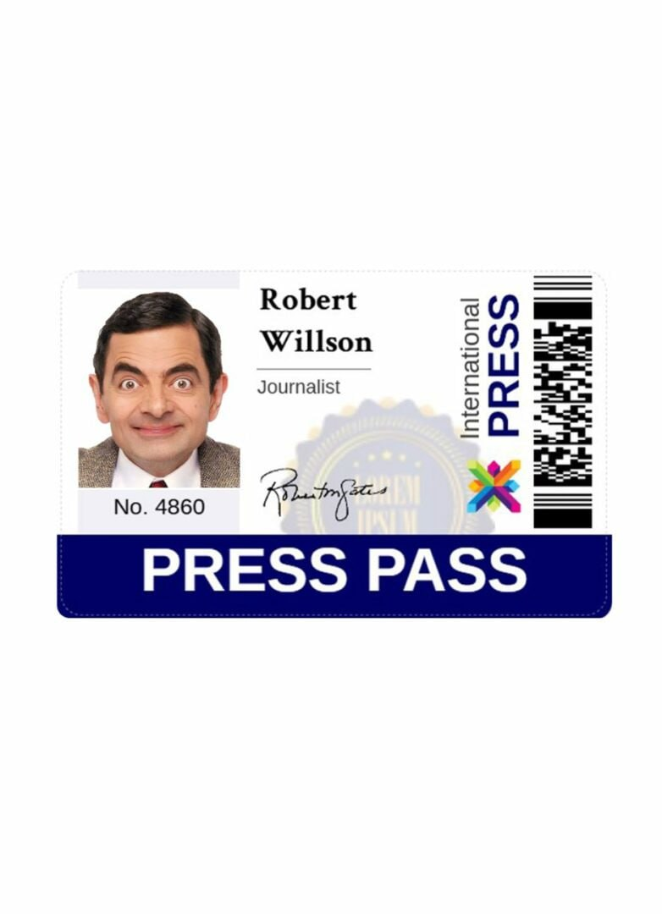
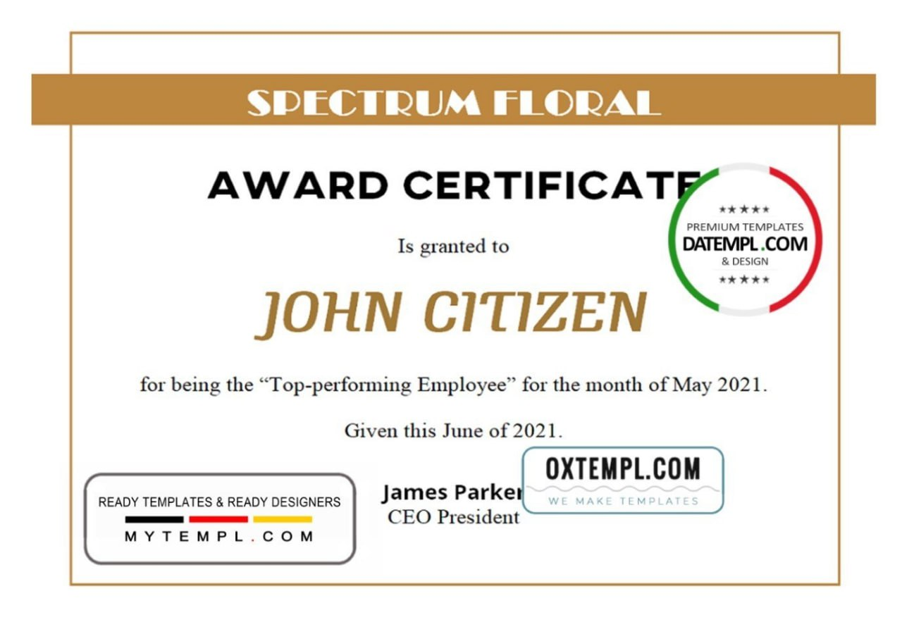

Local music festivals and community events are getting a professional upgrade — not with big budgets, but with smart, easy-to-use design tools. Organizers across Italy, Switzerland, Texas, and beyond are turning to three powerful templates: a media pass PSD template, a certificate template, and a bank statement example. These digital tools are helping small teams look polished, organized, and credible — all without hiring a designer.
Here’s how they’re making a difference:
1. Media Pass PSD Template: Clean, Custom Access Badges
No more handwritten labels. Event teams now use a media pass PSD template to create sleek, official-looking passes for press, photographers, and crew. Key features:
- Fully customizable (name, date, logo, photo)
- Clearly layered and labeled (e.g., “Name,” “Role,” “Photo Frame”)
- Compatible with free software like Photoshop
- Simple design — perfect for beginners
Available in versions for Spain, Switzerland, USA, and other regions, so formatting matches local styles. Just edit and print — it’s that easy.
2. Certificate Template: Recognize Effort in Style
Volunteers, performers, and sponsors deserve recognition. A well-designed certificate template makes it simple to honor contributions with a professional touch.
Why it works:
- Edit text fields (name, achievement, date, signature) in seconds
- Each layer is clearly named — no guesswork
- Minimalist, elegant layout fits any event
- Works with free photo editors
Used alongside a certificate example, it’s easy to preview and customize. Available for use in multiple countries, making it ideal for cross-cultural events.
3. Bank Statement Example: Show Financials with Confidence
When applying for grants or reporting to sponsors, organizers need clean financial documents. A realistic bank statement example helps present data clearly — without sharing sensitive bank info.
Benefits:
- Change names, amounts, dates, and addresses with ease
- Layers are neatly labeled and simple to edit
- Designed to work in Photoshop
- Looks authentic and professional
Available in region-specific formats for Albania, Australia, Bangladesh and more — so layouts match local banking standards.
Final Word
These templates are more than just digital files — they’re practical tools that save
time,
boost credibility, and make organizing easier. With full customization, clear layers,
and
wide software compatibility, they’re perfect for non-designers.
Whether you're running a small concert or a city-wide festival, tools like the media
pass
PSD template, certificate template, and bank statement example help you look
professional —
the simple way.